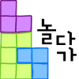

닫기
오브젝트 게시물 iframe으로 연결하기!!!

로그아웃
완료
취소
물건 배치하기
건너뛰기
새롭게 게시물을 작성하려면?
게시물 작성하기
기존의 게시물을 연결하려면?
게시물 연결하기
글쓰기
!!!!!! iframe으로 게시물 작성 공간 넣기
게시물 연결하기
연결 완료
연결할 물건 :
이동 완료
썸네일 촬영하기
썸네일 변경
썸네일을 위 사진으로 변경할까요?
물건 삭제하기
이 물건을 삭제할까요?
게시물 리스트